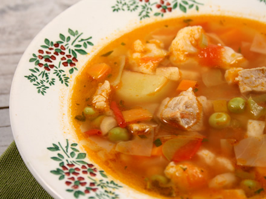

Ciorba este o supă tradițională românească, adesea acrișoară, preparată din legume, carne sau pește, fierte într-un lichid aromat. Se adaugă condimente, ierburi și uneori borș sau suc de lămâie pentru a-i da un gust distinct. Ciorba este cunoscută pentru diversitatea ingredientelor și variantele regionale, fiind un preparat reconfortant, servit de obicei alături de smântână și pâine proaspătă